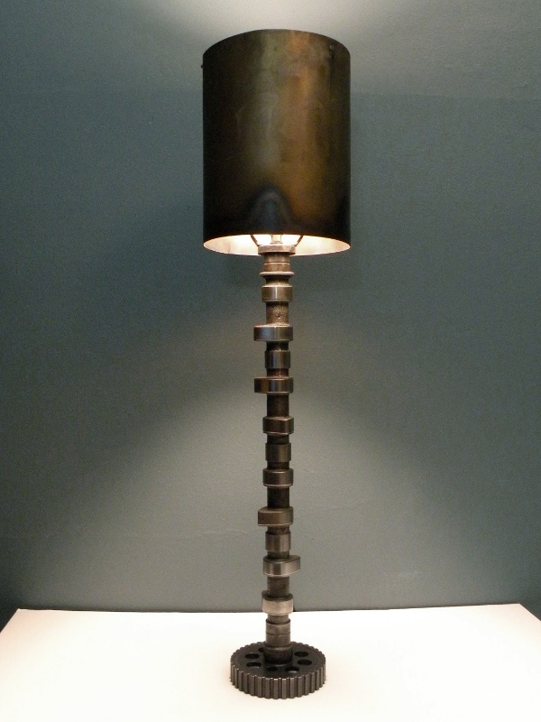
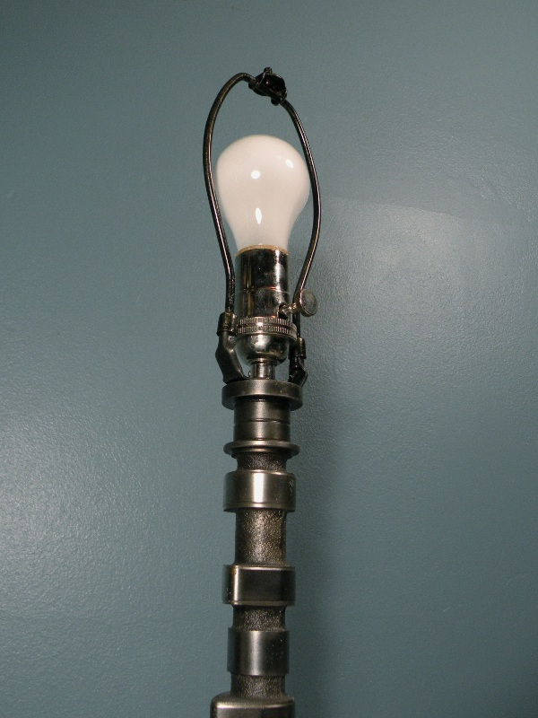
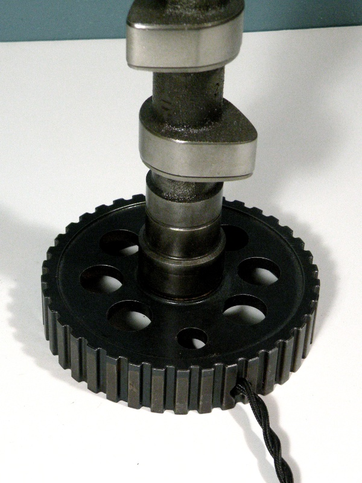
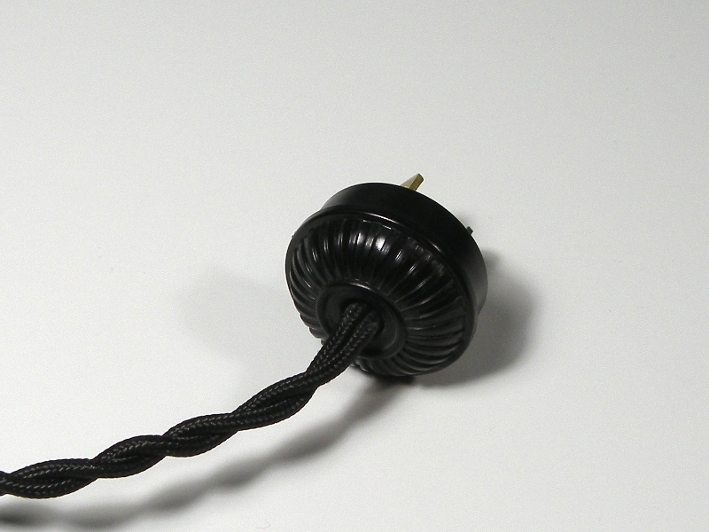

Camshaft Lamp Camshaft Lamp
Camshaft Lamp Camshaft LampThe camshaft in the Volvo b230f 4-cylinder engine rarely experiences enough wear to warrant replacement, and the stock camshaft leaves much to be desired in terms of performance. Since better camshafts are available in the aftermarket, or from similar Volvo engines, an extra, stock camshaft has almost no value . . . as a car part.
I am not the first to turn a camshaft into a lamp, but I may be the first to put this much work and thought into the construction of one. While most cam lamps are made from a camshaft which already has a hole though the center, the Volvo cam did not; that was my first obstacle, and nearly put an end to the project. I was willing to pay to have the nearly two-foot hole drilled through the center of the camshaft, but the machine shops in my area (and there are many) either had no confidence that they could accomplish the drilling, or wanted to charge prohibitive amounts to cover the cost of labor and bits. As I would learn, deep-hole drilling (often called gun drilling, because the process of drilling a rifle barrel is the same), is a very specialized service, and a rare one. The machinery required to drill straight holes of a depth dozens of times greater than its diameter is expensive, and apparently, not to be found north of Richmond and south of Baltimore.
Having no other reasonable option, I drilled the hole myself. This cost me many hours, two broken bits, and my sanity, but the deed is done, and the wiring concealed.
As much work as I put into drilling the camshaft, I was certainly not going to use cheap components to complete the project. Every aspect of the lamp was a deliberate effort to use the best possible materials. The bulb socket is a nickel-plated, solid brass socket with a cast knob; not one of the cheap, stamped aluminum sockets used on most lamps. I decided on a traditional harp to mount the lampshade, and used this heavy-duty, blackened steel harp. Since the local hardware stores carry only garbage, both pieces had to be ordered online.
The lamp base is made from the cam timing gear - it was the obvious choice, and stabilizes the lamp perfectly. The power cord passes through a hole drilled into the gear sidewall, where it runs nearly invisibly into the shaft. The cord is a reproduction, with the ordinary 600v PVC insulation beneath the cotton loom. The button plug (below) is also a reproduction of an antique lamp part, however for safety reasons, it is a polarized plug. While a lamp works equally well with a non-polarized plug, the possibility of electrocution while changing the bulb is slightly higher. Both the plug and the wire came from Sundial Wire, a terrific resource for antique electrical restoration projects.
The lamp shade is also entirely hand-made. I rolled a piece of sheet steel into a cylinder, riveted it together, then heat colored it with a torch. The effect is slightly crude, but it fits the lamp much better than any of the shades available in local stores. The entire lamp was thoroughly degreased and clear lacquered to protect against corrosion.

Created by Sean Corron, April 2, 2011.